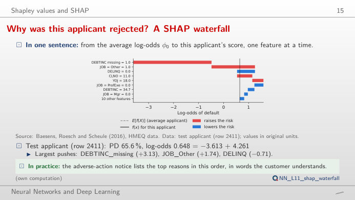
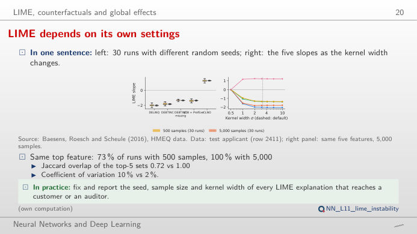
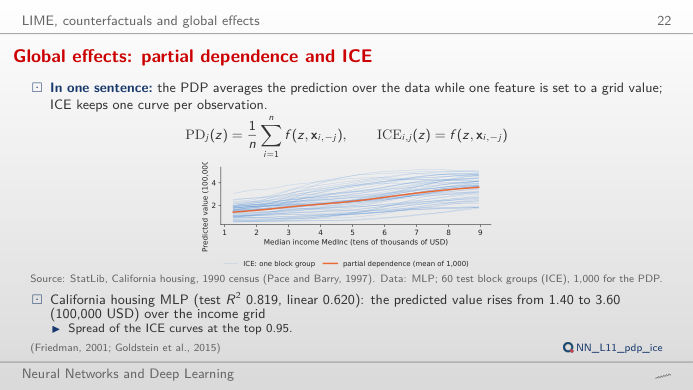
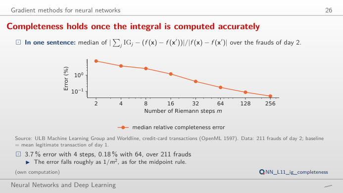
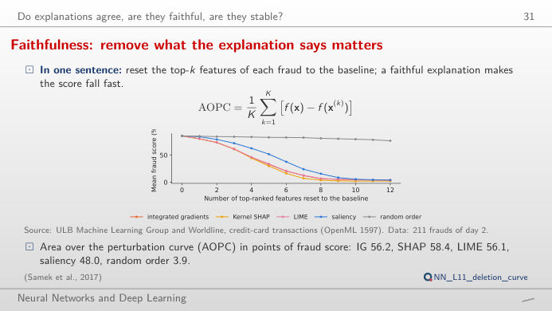
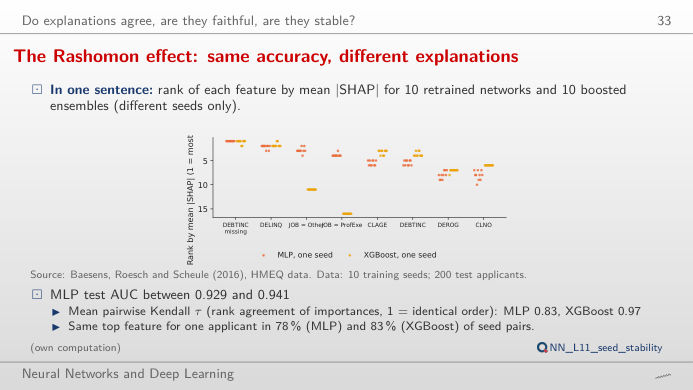

The slide of the lecture is on the left, the same figure on the right, recomputed in your browser from the models of the lecture when you move a control. The ▶ button moves the main parameter step by step. Under each figure: a readout, a question for the room and the Quantlet with the code of the chart. The explanations come from SHAP (SHapley Additive exPlanations), LIME (local interpretable model-agnostic explanations), partial dependence and ICE (individual conditional expectation) curves and IG (integrated gradients), computed for a multilayer perceptron (MLP), an XGBoost (extreme gradient boosting) ensemble and a logistic regression.
Shapley values and SHAP · LIME, counterfactuals and global effects · Gradient methods for neural networks · Do explanations agree, are they faithful, are they stable?
Shapley values and SHAP
Why was this applicant rejected? A SHAP waterfall

Answer
For the MLP the missing debt-to-income ratio (DEBTINC missing, +3.13 log-odds) dominates, followed by JOB = Other (+1.74); DELINQ = 0 (no delinquent credit lines) lowers the risk (−0.71). The bars add up exactly: −3.613 (the average applicant, PD 2.6%) + 4.261 = 0.648 log-odds, i.e. a PD of 65.6%. Switch the model: the three models agree that a missing DEBTINC is the strongest signal (in the data, 62.0% of the applicants without DEBTINC default against 8.6% of the others), but they split the rest of the score differently. Move the applicant slider to the safest applicants: there, most bars are blue.
LIME, counterfactuals and global effects
LIME depends on its own settings

Code of this chart: NN_L11_lime_instability · open in Colab
Answer
No: with 500 samples the top feature is the same as in the reference run in 73% of the 30 runs (Jaccard overlap of the top-5 sets 0.72); with 5,000 samples in 100% (overlap 1.00), and the coefficient of variation of the top-5 slopes falls from 10% to 2%. The kernel width σ matters as well: the slope of DELINQ, the top LIME feature, goes from −2.04 to almost 0 as σ moves over the seven widths tried (default 0.75·√18 = 3.18). Report the seed, the sample size and the kernel width with every LIME explanation.
Global effects: partial dependence and ICE

Answer
No. The PDP (partial dependence plot) is an average; the ICE curves show one block group each, with all its other features fixed. At the top of the income grid the curves spread by 0.95 (standard deviation, 100,000 USD): the network has learned interactions, e.g. with location. Centre the curves (c-ICE) to compare only their shapes. With latitude the curves fall from south to north for most block groups, but not by the same amount.
Gradient methods for neural networks
Completeness holds once the integral is computed accurately

Answer
IG is an integral of the gradient along the straight path from the baseline x′ (the mean legitimate transaction of day 1) to the fraud x, computed with a midpoint Riemann sum of m steps. With few steps the sum is a poor approximation: over the 211 frauds of day 2 the median relative error is 7.5% with 2 steps, 3.7% with 4 and 0.18% with 64; it falls roughly as 1/m², as for the midpoint rule. The ranking of the features is stable much earlier than the sum.
Do explanations agree, are they faithful, are they stable?
Faithfulness: remove what the explanation says matters

Answer
Integrated gradients, Kernel SHAP and LIME take the mean fraud score from 85.4% to about 61% after three features (IG 61.3%, SHAP 61.1%, LIME 61.2%); saliency (the absolute gradient) only to 71.9%, and a random order to 83.9%. The AOPC (area over the perturbation curve, mean drop over k = 1–12) is 56.2, 58.4 and 56.1 points for IG, SHAP and LIME, 48.0 for saliency and 3.9 for the random order. Move the fraud slider: for single frauds the curves can cross.
The Rashomon effect: same accuracy, different explanations

Answer
Not quite: the ranking of the global importances agrees with a mean pairwise Kendall τ of 0.83 for the networks and 0.97 for XGBoost, and the top feature of a single applicant is the same in 78% (MLP) and 83% (XGBoost) of the seed pairs. This is the Rashomon effect: several equally good models explain the data in different ways. An explanation sent to a customer should be checked across seeds, or produced by a model whose explanation is stable.
Credit: HMEQ (home equity loans) data of Baesens, Roesch and Scheule (2016), 5,960 loans, 400 test applicants explained, 100 training applicants as background. Fraud: ULB (Université Libre de Bruxelles) Machine Learning Group and Worldline, credit-card transactions (OpenML 1597); network trained on day 1, 211 frauds of day 2 explained. House values: StatLib, California housing, 1990 census (Pace and Barry, 1997). Models, SHAP, LIME and attributions: analysis_L11.py, seed 20261108.